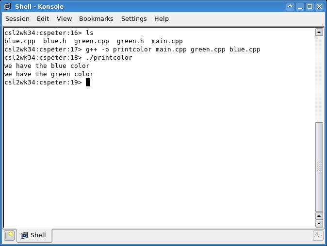
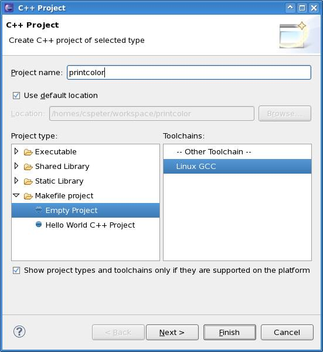
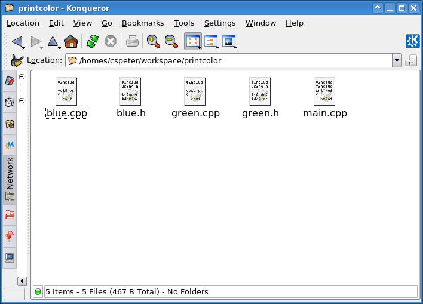
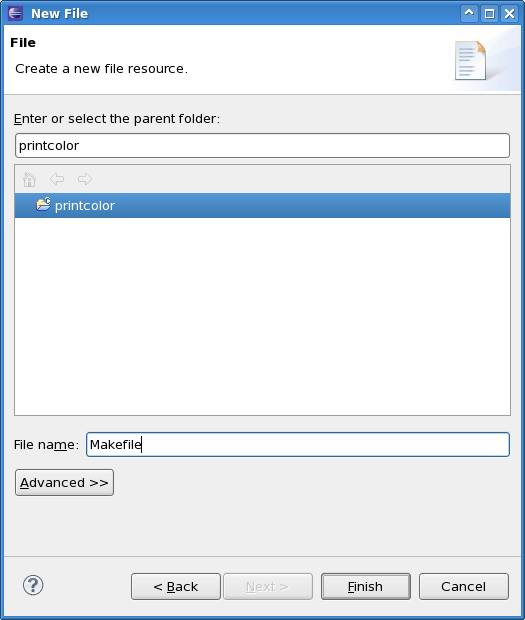
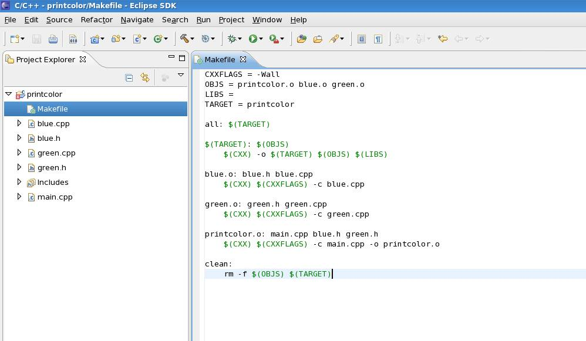
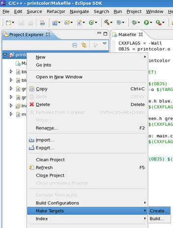
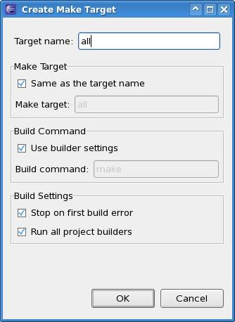
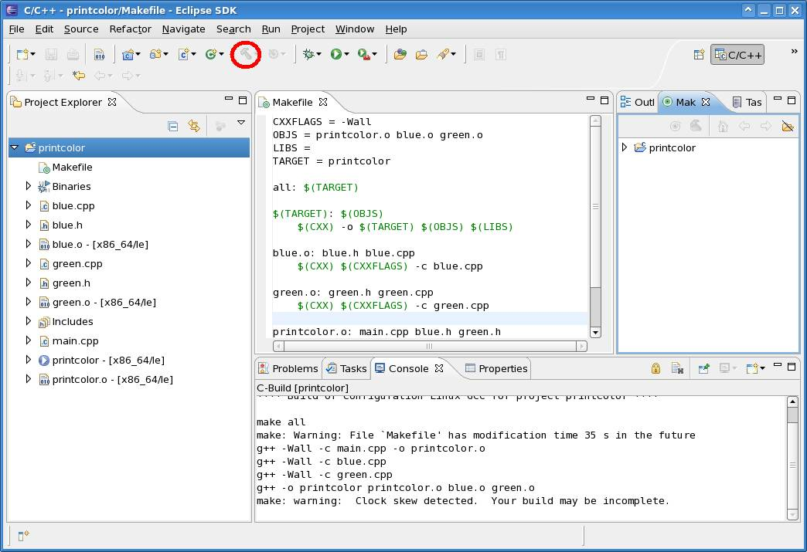
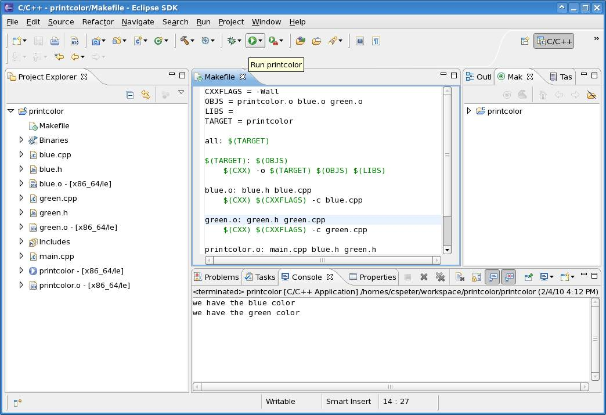
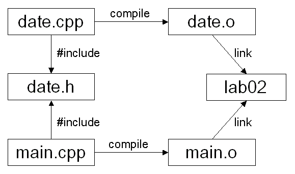

COMP 2012H
Honors OOP and Data Structures
Lab 7: Separate Compilation
Objective
The objective is to learn the separate compilation and the usage of Makefile
in both Eclipse IDE and Linux command-prompt environment
Please refer to the following link if you are not familiar with the common
Linux commands:
http://files.fosswire.com/2007/08/fwunixref.pdf
Walking through a Simple Example
Suppose we have the following files and we want to make a color printing
program out of them:
blue.h,
blue.cpp,
green.h,
green.cpp and
main.cpp.
Solution 1: put everything in one line
In the console, type:
g++ blue.cpp green.cpp
main.cpp -o printcolor
It works.

- Problem 1: what if we change the content of green.cpp?
Do we have to build everything again (including the files that remain
intact, like blue.cpp)?
- Problem 2: what if we have another 100 colors to add
to our program? Every time we add a new color, we need to build the program
again until finally we have to type 100 filenames on the command line? It is
messy and error-prone.
Solution 2: Separate compilation and makefile
One thing at a time:
g++ -c blue.cpp
g++ -c green.cpp
g++ blue.o green.o main.cpp -o printcolor
If we change green.cpp, we just need to rebuild green.o and printcolor,
leaving the blue color files untouched.
Use a makefile to put everything together, thus every time
we just need to type "gmake" to do compiling, assembling and linking.
About Makefile
Reference material for
the Makefile:
makefile.pdf (TA in your lab section will briefly go through the slides of
the Makefile)
- It makes compilation much easier. You just need to
type one simple short command instead of a long complicated ones. The
purpose of the make utility is to determine automatically which pieces of a
large program need to be recompiled and then issue the corresponding
commands to recompile them.
- Most of the time software in Unix-like operating
systems is installed using gmake/make, not by utilities like InstallShield
on the Windows platform. If you encounter any problem during software
installation, you will need to examine the makefile. Hence understanding how
to use makefile can help you tremendously.
- To use make, you must first write a file called
makefile that describes the relationships among the files in your program
and includes the commands for processing the files accordingly.
- In a program, typically the executable file is updated
from the object files, which are in turn created by compiling the source
files.
Create and Use a g++ Makefile
You can use gmake (which calls g++) to compile and link your
program or object files. When using gmake, it looks for a file
called makefile or Makefile. (The name
Makefile is preferred as it can easily be distinguished from other
files which typically have filenames in lowercase.) You can write all the rules
in your makefile to simplify and speed up your compilation and linking process.
Sample
Makefile.
To make and use a g++ makefile, do the following in the console:
1.
Create a text file called Makefile
¡¤
The
simplest way is to type:
pico Makefile
Or
you can use any text editor like Vi or Emacs
2.
Edit the makefile, add:
¡¤
Variable
definitions (optional), in the form:
VARIABLE_NAME =
variable_definition
Such
as:
TARGET = printcolor
Use
the variable by $(VARIABLE_NAME)
¡¤
Dependencies followed by compilation rules in the second line, such as:
blue.o: blue.h blue.cpp
$(CXX) $(CXXFLAGS)
-c blue.cpp
Which translates to,
blue.o depends on blue.h and blue.cpp, compile blue.o using
the rule: g++ (flags) ¨Cc blue.cpp.
The tag
all and clean specifies the final target to make, and the rules to
clean up.
3.
Save and quit editing. Use the makefile by typing:
make
or make all
and you
should see the program being compiled and the target being created.
Clean up all results by typing:
make clean
Work on Makefile with Eclipse
- Create a Makefile project "printcolor"
under Eclipse.

- Copy files to the project directory ( cspeter should
be replaced by your login ID )

- Choose New > File to add a new Makefile to the
current project

- Type in the content of the Makefile. Here is a
sample Makefile based on the above description:

- Create a make target. Based on the rules defined on
the Makefile, the target name should be equal to all

- Build the project by clicking the hammer button
- You may receive some unknown warning messages. It
should be fine if the executable named printcolor is generated
(can be viewed from the Project Explorer on the left panel)
- You should notice that Makefile enables the
separate compilation
- Parameters
- -Wall means show all warning messages when
compiling a cpp file
- OBJS stores all the intermediate object files
generated during the compilation process
- LIBS stores external libraries. We don¡¯t
require external libraries, so we omit this variable
- TARGET is the name of the final executable

- Run the executable printcolor

Lab Task
Download
-
date_all.cpp contains the definition and implementation of the class
Date as well as the main function
Lab Work
Declaration, Definition and Implementation
In practice, programmers always separate a segment of program source code
into three parts: declaration, definition and implementation.
The purpose is to separate the interface from the actual implementation
to make the program easier to understand and reuse. The objectives are to
achieve:
- Clean and concise header files (*.h)
- Separate the compilation process to avoid unnecessary
recompilation (or to achieve minimum recompilation) when some of the program
files are changed
For example, consider the class
class Date;
Class declaration: Introduce a class called Date
to the compiler, but with only function prototypes without any detailed
information provided yet
class Date {
Date();
// ... function prototypes and member variables
};
Class definition or implementation: Define the class
Date's member variables and member functions so that codes can be
generated. The are in the form of the following
Date::Date() {
// ... detailed implementation
};
¡¡
¡¡
// ...
Part I:
- Re-factor the program in
date_all.cpp to make use of the idea of separate compilation, which is
to separate the class Date's definition and implementation in the given
date_all.cpp:
- Put the class Date's definition into
date.h
- Put the class Date's implementation into
date.cpp
- Put the main function into main.cpp
- Complete the code according to comment TODO
- Create a g++
Makefile so that it can:
- Compile date.cpp to generate an object file date.o
- Compile main.cpp to generate an object file main.o
- Remove all .o and executable files in clean target
- Link the object files and generate the executable
code with filename lab7
¡¡
Part II: (Optional)
- In Eclipse, create a Makefile project called "date".
- Copy the re-factored source and header files (date.h,
date.cpp, main.cpp)
to the project.
- Complete the Makefile created by
Eclipse, so that it can do the same thing as the g++ Makefile created in
Part I.

References
©
CSE,
HKUST |
OpenDesign